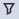
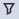

操作步骤
管理告警
- 选择“监控 > 告警和事件 > 告警”。
- 可选: 可以单击“级别”或“告警对象”旁的
 ，或单击“发生时间”旁的
，或单击“发生时间”旁的 ，对告警进行筛选。或单击“告警ID”旁的
，对告警进行筛选。或单击“告警ID”旁的 ，对告警进行搜索。
，对告警进行搜索。 - 单击某条告警的“描述”，参考右侧显示的“修复建议”处理告警。
- 可选: 清除告警。
- 在列表框中选择需要清除的当前告警，单击“清除”。
- 在弹出的对话框中，单击“确定”。
管理事件
- 选择“监控 > 告警和事件 > 事件”。
- 可选: 可以单击“级别”或“告警对象”旁的
 ，或单击“发生时间”旁的，对事件进行筛选。或单击“告警ID”旁的
，或单击“发生时间”旁的，对事件进行筛选。或单击“告警ID”旁的 ，对事件进行搜索。
，对事件进行搜索。 - 单击某条事件的“描述”，参考右侧显示的“修复建议”处理事件。
- 可选: 可以在列表框中选择需要清除的当前事件，单击
 ，导出事件。
，导出事件。